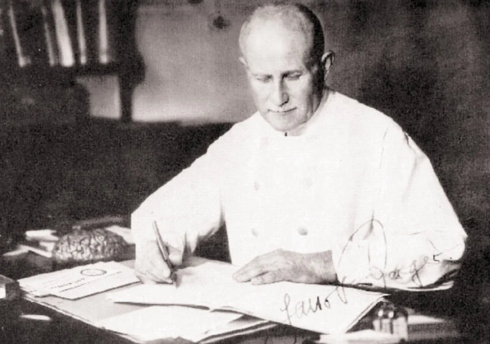

Background video: Michigan Medicine (2025).
Group 31. All team members, their roles and responsibilities.
| Name | Student ID | Role | Responsibilities |
|---|---|---|---|
| Andrey Bobnev | 25311668 | Group Leader | Progress tracking, running meetings, technology section, web design |
| Taryn Meechai | 25316496 | Editor | Website manager, site build and changes, risks section |
| Alan Paul | 25318071 | Researcher | Academic sources, opportunities section, choices section, web design |
| Page | Written by |
|---|---|
| Home/Abstract | Andrey Bobnev |
| Technology | Andrey Bobnev |
| Opportunities | Alan Paul |
| Risks | Taryn Meechai |
| Choices | Alan Paul, Taryn Meechai |
| References | Andrey Bobnev, Alan Paul, Taryn Meechai |
| Team | Andrey Bobnev, Alan Paul, Taryn Meechai |
| Meeting Minutes | Andrey Bobnev |
